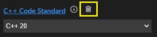
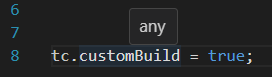
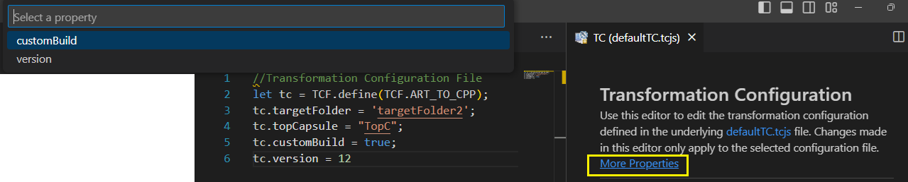
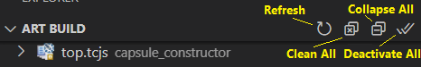

Transformation Configurations
A transformation configuration (or TC for short) contains all properties needed for transforming Art files into C++ code and for building the generated code into an application or a library. It is a text file in JavaScript format with the file extension .tcjs. Using JavaScript for defining build properties has many advantages. For example, it allows for dynamic properties where the value is not a static value but computed dynamically by JavaScript code when the TC is built.
Code RealTime provides a dedicated language server for TCs to make them just as easy to work with as Art files. A form-based editor is also provided as an alternative.
Creating Transformation Configurations
To create a new TC select a file in the workspace folder that contains the Art files you want to transform to C++. Then invoke the command File - New File - Transformation Configuration. In the popup that appears specify the name of the TC or keep the suggested default name.

A .tcjs file will be created with the minimal contents. Specify the mandatory topCapsule property (if you are building an executable) and any other properties needed.
Setting a Transformation Configuration as Active
You can have more than one TC in your workspace, and also multiple TCs in the same workspace folder, but at most one TC in each workspace folder can be active. Code RealTime uses the active TC in several ways:
- It controls how to automatically generate C++ code from the Art files in the workspace folder. In this respect it corresponds directly to the
--tcoption for the Art Compiler. - It's used for automatically propagating changes you make in generated files back to the source Art files (see Making Changes in Generated C++).
- It affects how references in Art files are bound to Art elements in other Art files. More precisely, it's the sources and prerequisites properties of the active TC that have an influence on the binding of references (since these properties control which Art files that are visible when building the active TC).
Note
If you don't set a TC as active none of the above will work (or will work incorrectly). It's therefore strongly recommended to create a TC and set it as active as early as possible when you start to work in a new Art workspace folder.
Set a TC as active by right-clicking on it and perform the command Set as Active. An active TC is marked with a checkmark.

If the active TC has prerequisites, those too will be set as active. This ensures that the results you get when working with Art files in the IDE will be the same as when you will build the TC using the Art Compiler.
You can deactivate an individual TC by removing the file art_build_settings.json in the .vscode folder. To deactivate all TCs in the workspace use the Deactivate All command in the Art Build view.
Editing Transformation Configurations
You can edit a TC directly as a JavaScript file in the text editor. Features such as content assist, navigation and hover tooltips work very similar to how they work for an Art file:
- Use content assist (Ctrl+Space) after typing
tc.to get the list of all available TC properties that can be set. You can also use content assist in many places to get suggestions for valid TC property values, for example the list of available top capsules.

- Certain references in the TC can be navigated by Ctrl + click. For example, you can navigate to the top capsule.

- Rest the cursor on a TC property name to get more information about the property.

- TC properties are validated when edited and found problems will be reported. Click the "More information" hyperlink for a more detailed description of a problem, including suggestions for how to fix it.

Form-based TC Editor
As an alternative to editing a TC as a JavaScript file Code RealTime also provides a form-based editor which may be easier to use, especially until you are familiar with all TC properties that exist and what they mean.
To open the form-based TC editor, right-click on a TC file and invoke the context menu command Edit Properties (UI).

The editor groups the TC properties into three sections:
-
General: Properties which define the scope of the TC (which elements to transform to C++ and where to place generated files)
-
Code Generation: Properties that control how Art elements are transformed into C++ code, and other properties that affect the generated code
-
Build: Properties that control how generated C++ code is built into a library or an executable
Each available TC property has its own widget for viewing and editing the value. The type of widget depends on the type of TC property. For example, an enumerated property like "C++ Code Standard" uses a drop down menu.

Click the info button to view documentation about a certain TC property. Click the button again to hide the documentation.

Certain TC properties have default values. Such values are not stored in the TC file, but the TC editor still shows them so you can know what value will actually be used unless you set a custom value for such a property.

You can tell which TC properties that have a custom (i.e. non-default) value set by looking at the color of the property name. Properties with custom values set have names shown in blue which are hyperlinks that will navigate to the value in the TC file. Such properties also have a "Delete" button which can be used for deleting the property value (i.e. to restore the property to use its default value).

You can freely choose if you want to edit TC files as text files or using the form-based TC editor, and you can even use both at the same time. The form-based TC editor is automatically updated as soon as you edit the TC file, and the TC file is automatically updated when a widget with a modified value loses focus.
Custom TC Properties
You can add your own custom properties to a TC by simply assigning a value to them. This allows you to persist your own custom data in TC files. Here is an example:
tc.customBuild = true;
Custom properties are ignored when building the TC, but can be seen and used by Build Variant scripts when implementing a custom way of building your application.
In the TC text editor custom properties can be recognized by a tooltip that says "any":

In the form-based TC editor custom properties are not shown, but a hyperlink More Properties appears under the title text if the TC has one or many custom properties. You can click this link to navigate to the custom properties in the TC text editor.

Note
The More Properties hyperlink is also useful for navigating to TC properties which the form-based TC editor doesn't (yet) support, for example the threads property.
Transformation Configuration Prerequisites
A TC can either build a library or an executable. This is controlled by the topCapsule property. If this property is set the TC will build an executable, otherwise it will build a library. To ensure that a library gets built before an executable that links with it, you can set the prerequisites property of the executable TC to reference the library TC. Doing so will also cause the executable to link with the library automatically (i.e. you then don't need to manually set-up necessary preprocessor include paths or linker paths using other TC properties).
If you change the prerequisites of a TC you should again set it as active so that the prerequisite TCs also become active.
Accessing the Top TC from a Prerequisite TC
A library TC that is built as a prerequisite of an executable TC should typically use the same values for many TC properties as are used by the executable TC. For example, both TCs should be compiled with the same compiler and use the same TargetRTS configuration, otherwise build inconsistencies could occur. To avoid the need of duplicating such common properties both in the executable TC and in all its prerequisite library TCs, it's possible to access properties of the executable TC in the library TC. Here is an example:
tc.compileArguments = TCF.getTopTC().eval.compileArguments;
The function TCF.getTopTC() will at build-time return a reference to the TC that is at the "top" of the prerequisite hierarchy, i.e. the TC on which the build command is performed. It's typically an executable TC, but could also be a library TC (in case you build a library that depends on other libraries).
Since we construct a TC property value based on the value of another TC property (here coming from the top TC) we should use the eval property to ensure all default values get expanded into real values.
Art Build View
Code RealTime provides a view called Art Build which makes several workflows related to TCs easier. The view shows all TCs that are present in the workspace so you don't have to find them in the Explorer view under each workspace folder. For each TC its prerequisites are shown below in a tree structure. This allows to quickly see which TCs a certain TC depends on through its prerequisites without having to open the TC editor.

The smaller gray text to the right of the TC name tells in which workspace folder the TC is located. This helps since it's common to have TCs with the same name in a workspace.
You can edit a TC by double-clicking on it. This will open the TC in a text editor.
When a TC is selected in the Art Build view you can use the toolbar buttons for building, cleaning and running it.
Tip
It's common to build the same TC many times when developing an Art application. By keeping that TC selected in the Art Build view you can quickly build it by just pressing its Build toolbar button. Building the TC from the Explorer view requires you to first find it which can be cumbersome since the Explorer view selection changes frequently.
There are also a few useful commands in the Art Build view toolbar:

-
Refresh In most cases the Art Build view refreshes automatically when TCs are modified. However, if needed you can force a refresh by pressing this button.
-
Clean All Cleans all TCs by removing all target folders in the workspace. Everything contained in the target folder will be deleted (generated code, makefiles, built binaries, etc). A message will be printed in the Art Server channel in case all target folders could be successfully removed, or if not, which ones that could not be deleted.
-
Collapse All Collapses all TCs to not show any prerequisites.
-
Deactivate All Makes all TCs non-active. This makes it easier to switch from building one set of active TCs to another.
Properties
Below is a table that lists all properties that can be used in a TC (in addition to custom properties). Note that many TC properties have default values and you only need to specify a value for a TC property if its different from the default value. Each property is described in a section of its own below the table.
| Property | Type | Default Value |
|---|---|---|
| capsuleFactory | String | N/A |
| commonPreface | String | N/A |
| compileArguments | String | N/A |
| compileCommand | String | "$(CC)" |
| copyrightText | String | N/A |
| cppCodeStandard | Enum string | N/A (Compiler Default) |
| eval | TC object | N/A |
| executableName | String | "$(TOP_CAPSULE)$(EXEC_EXT)" |
| inclusionPaths | List of strings | [] |
| libraryName | String | "$(LIB_PFX)$(TCONFIG_NAME)$(LIB_EXT)" |
| linkArguments | String | N/A |
| linkCommand | String | "$(LD)" |
| makeArguments | String | N/A |
| makeCommand | String | "$defaultMakeCommand" |
| prerequisites | List of strings | [] |
| sources | List of strings | ["*.art"] |
| targetConfiguration | String | Depends on current operating system |
| targetConfigurationName | String | "default" |
| targetFolder | String | Name of TC with "_target" appended |
| targetRTSLocation | String | "${code_rt_home}/TargetRTS" |
| threads | List of Thread objects | List of two Thread objects (MainThread and TimerThread) |
| topCapsule | String | N/A |
| unitName | String | "UnitName" |
| userLibraries | List of strings | [] |
| userObjectFiles | List of strings | [] |
capsuleFactory
This property can be used for specifying a global capsule factory that can control how all capsule instances in the application are created and destroyed. One scenario where this is useful is when implementing dependency injection for capsule creation. See Capsule Factory and Dependency Injection for more information.
The value of this property should be a C++ expression of type RTActorFactoryInterface*. If the expression contains the variable $(CAPSULE_CLASS) it will be replaced with the name of the C++ class for the capsule. This can be useful for implementing a generic capsule factory which takes the capsule class as a template parameter.
tc.capsuleFactory = '&CapsuleFactory::factory';
Note that you can override the use of the global capsule factory by providing a local capsule factory for a specific part.
commonPreface
This property allows you to write some code that will be inserted verbatimly into the header unit file (by default called UnitName.h). Since the header unit file is included by all files that are generated from the TC, you can use the common preface to define or include definitions that should be available everywhere in generated code.
tc.commonPreface = `
#include <iostream>
`;
compileArguments
Specifies the arguments for the C++ compiler used for compiling generated C++ code. Note that some compiler arguments may already be specified in the TargetRTS configuration that is used, and the value of this property will be appended to those standard compiler arguments.
tc.compileArguments = '$(DEBUG_TAG)'; // Compile code for debugging
compileCommand
Specifies which C++ compiler to use for compiling generated C++ code. The default value for this property is $(CC) which is a variable that gets its value from the TargetRTS configuration that is used.
copyrightText
This property may be used to insert a common comment block in the beginning of each generated file, typically a copyright text.
tc.copyrightText =
`
Copyright © 2024
All rights reserved!
`;
You can use a multi-line text with empty lines in the beginning and end as shown above, to make the TC more readable. Such empty lines will be ignored by the code generator.
cppCodeStandard
Defines the C++ language standard to which generated C++ code will conform. Valid values for this property are C++ 98, C++ 11, C++ 14, C++ 17, C++ 20 and C++ 23. If you need to compile generated code with a very old compiler that doesn't even support C++ 98 you can set this preference to Older than C++ 98.
It's recommended to set this property to be explicit about what C++ code standard to use. Doing so ensures that the code generator generates C++ that complies with the selected code standard, and that the C++ compiler also will compile it with the same code standard. The C++ language server will also use the same code standard to ensure a correct behavior when working with the generated C++ code in the UI.
If you don't set the cppCodeStandard property, generated code will comply with C++ 17. But in that case no code standard flag will be passed to the compiler, and instead the compiler's default code standard will be used. Refer to the documentation of your compiler to know which code standard it uses by default. The same is true for the language server; it will use a default code standard.
Note that even if the TargetRTS can be compiled also with old C++ compilers, some features will not be available for code standards older than C++ 11.
eval
This is a special property that returns a copy of the TC where all properties with implicit default values have been expanded into real values. It's useful when you want to define a TC property value based on the value of another TC property which has a default value.
As an example consider this TC file which builds an application where the copyright statement is placed in the unit header file:
let tc = TCF.define(TCF.ART_TO_CPP);
tc.commonPreface = `
/** Copyright by me */
`;
tc.copyrightText = "See copyright in " + tc.eval.unitName + ".h";
This TC doesn't set the value of the unitName property, but it has a default value ("UnitName") which can be obtained by means of the eval property. If you would directly access tc.unitName in the above example, the string "undefined" would be returned when the unitName property has not been explicitly set.
The eval property is often used together with the TCF.getTopTC() function as described here.
executableName
Specifies the name of the executable that is built by the TC. This property is only applicable for TCs that build executables.
The default value of this property is "$(TOP_CAPSULE)$(EXEC_EXT)" where $(TOP_CAPSULE) is the name of the topCapsule and $(EXEC_EXT) is a variable for the file extension which gets its value from the TargetRTS configuration that is used.
inclusionPaths
Specifies additional include paths for the C++ preprocessor in addition to "standard" ones such as the location of TargetRTS include files. If your application links with a user library or user object file you need to add the location of the header file(s) that belong to the library or object file.
tc.inclusionPaths = ["/libs/myLib1/includes", "/libs/myLib2/includes"];
Note that you don't need to add inclusion paths for target folders of prerequisite TCs. They are added automatically by the make file generator.
libraryName
Specifies the name of the library that is built by the TC. This property is only applicable for TCs that build libraries.
The default value of this property is "$(LIB_PFX)$(TCONFIG_NAME)$(LIB_EXT)" where $(LIB_PFX) is a prefix and $(LIB_EXT) is a file extension which get their values from the TargetRTS configuration that is used. $(TCONFIG_NAME) expands to the name of the TC file (only the base name, not including the file extension).
linkArguments
Specifies the arguments for the C++ linker used for linking object files and libraries into an executable. This property is only applicable for TCs that build executables.
tc.linkArguments = '/DEBUG'; // Build executable for debugging with Visual Studio
linkCommand
Specifies which C++ linker to use for linking object files and libraries into an executable. The default value for this property is $(LD) which is a variable that gets its value from the TargetRTS configuration that is used. This property is only applicable for TCs that build executables.
makeArguments
Specifies the arguments for the make command to be used.
tc.makeArguments = '-s'; // Silent make (do not print build commands to the terminal)
makeCommand
Specifies which make command to use for processing the generated make file. By default the make command is $defaultMakeCommand which gets its value from which TargetRTS configuration that is used.
prerequisites
This property is a list of references to other TCs that need to be built before the current TC. It's typically used to express that a library TC is a prerequisite of an executable TC, which means the library TC needs to be built before the executable TC. Below is an example where an executable TC has a library TC as a prerequisite:
tc.prerequisites = ["../MyLibrary/lib.tcjs"];
Prerequisite TCs can either be specified using absolute or relative paths. Relative paths are resolved against the location of the TC that has the property set.
You can also use the predefined variable ${workspaceFolder} in prerequisite paths. This is often useful as it makes it possible to reference a prerequisite TC based on another workspace folder, regardless of where in the file system it's located. For example:
tc.prerequisites = ["${workspaceFolder:MyLibrary}/lib.tcjs"];
Note that use of workspace-relative paths requires setting the -ws option for the Art Compiler.
For more information about this property see Transformation Configuration Prerequisites.
sources
By default all Art files that are located in the same folder as the TC will be transformed to C++. Sometimes you may want to exclude some Art files, for example because they are built with another TC, or they contain something you want to temporarily exclude from your application without having to delete the files or comment out their contents. In these cases you can set the sources property to specify exactly which Art files that should be built by the TC. The value of the property is a list of strings that specify glob-style patterns and anti-patterns. An Art file will be transformed if it matches at least one pattern and doesn't match any anti-pattern. Anti-patterns start with the ! character. In both patterns and anti-patterns you can use the wildcards * (matches any sequence of characters) and ? (matches a single character). Below are a few examples:
tc.sources = ["*.art"]; // Transform all Art files in the folder that contains the TC. This is the default behavior if the "sources" property is not set.
tc.sources = ["cap1.art", "cap2.art"]; // Only transform two specific Art files
tc.sources = ["*.art", "!code_rt_gen.art"]; // Transform all Art files except one
tc.sources = ["!code_rt_gen.art"]; // Same as above (i.e. the pattern "*.art" is optional)
tc.sources = ["source??.art", "!*_gen.art"]; // Transform all Art files with names starting with "source" and followed by two arbitrary characters. Art files with a name that ends with "_gen" are excluded.
Example
You can find a sample application that has a TC with the "sources" property set here.
The sources property can also be used to specify which regular (i.e. non-generated) C++ files that should be included in the build. See this chapter for more information.
targetConfiguration
Specifies which TargetRTS configuration to use. The TargetRTS location specified in the targetRTSLocation property defines valid values for this property. If this property is not specified, and the default TargetRTS location from the Code RealTime installation is used, then it will get a default value according to the operating system that is used. For Windows a MinGw-based configuration will be used, while for Linux a GCC-based configuration will be used.
tc.targetConfiguration = "WinT.x64-VisualC++-17.0";
targetConfigurationName
This property maps to a subfolder of the target folder where all generated files that are not source code will be placed. This includes for example makefiles and the files that are produced by these makefiles (typically binaries). The default value of this property is default.
targetFolder
Specifies where files generated from the TC will be placed. This property is usually just set to a name, and then a target folder with that name will be created next to the folder that contains the TC. When the build runs from the UI, that target folder is then added as a workspace folder, which will cause you to be prompted about if you trust the authors of the files in that folder. It's safe to answer yes since all files in that folder are automatically generated by Code RealTime.
You can specify an absolute path to a target folder if you prefer generated files to be placed in a certain location that is accessible to everyone in the team, for example a shared network drive. If you instead use a relative path it will get resolved relative to a desired output folder. For a UI build the output folder is set using the setting code-rt.build.outputFolder. When building with the Art Compiler the output folder is instead set using the --out option. If you haven't set the desired output folder, relative paths will instead be resolved against the folder that contains the workspace folder that contains the TC where the targetFolder property is set.
Use forward slashes as path separator in this property.
If this property is not specified it defaults to the name of the TC, with _target appended. For example, if the TC is called app.tcjs, the target folder will default to app_default.
targetRTSLocation
Specifies the location of the TargetRTS to use. If no value is set for this property the TargetRTS from the Code RealTime installation will be used. If you want to use another TargetRTS specify the full path to the TargetRTS folder (including that folder itself). Use forward slashes as path separator. For example:
tc.targetRTSLocation = "C:/git/rsarte-target-rts/rsa_rt/C++/TargetRTS";
threads
Specifies the threads used by the application. If no value is set for this property the application will have two default threads:
-
MainThread Runs all capsule instances in the application. It's implemented in the TargetRTS by the RTPeerController class.
-
TimerThread Runs all timers in the application. It's implemented in the TargetRTS by the RTTimerController class.
Both these threads will have a stack size of 20kB and run at a normal priority.
If your application needs a different thread configuration, or threads with different properties, you need to set the threads property. Note that you cannot just specify threads in addition to the default ones mentioned above, but must always specify all threads. Here is an example where the default threads are present, plus one additional user-defined thread:
tc.threads = [
{
name: 'MainThread',
implClass: 'RTPeerController',
stackSize: '20000',
priority: 'DEFAULT_MAIN_PRIORITY'
},
{
name: 'TimerThread',
implClass: 'RTTimerController',
stackSize: '20000',
priority: 'DEFAULT_TIMER_PRIORITY'
},
{
name: 'MyThread',
implClass: 'RTPeerController',
stackSize: '20000',
priority: 'DEFAULT_MAIN_PRIORITY',
logical: [
'MyLogicalThread'
]
}
];
Note that for user-defined threads, like MyThread above, you need to specify one or many logical threads that are mapped to it. These are references to threads that your application use instead of refering directly to a physical thread. This indirection makes it possible to change how capsule instances of your application are run by threads by only modifying the threads property in the TC, without the need to change any application code.
Only executable TCs can define physical threads. A library TC can, however, define logical threads. An executable TC that has such a library TC as its prerequisite must map those logical threads to physical threads. Here is an example of a library TC that defines a logical thread.
tc.threads = [ `LibraryThread` ];
Note that in this case the threads property contains a list of strings rather than a list of objects as is the case for an executable TC.
Read more about threads here.
topCapsule
Specifies the capsule that should be automatically incarnated when the executable starts to run. Hence this property is only applicable for TCs that build executables, and for those TCs it's a mandatory property. The top capsule is the entry point of the realtime application.
If you don't specify a value for this property, the TC will build a library instead of an executable.
unitName
Specifies the base name of the so called unit header and implementation files that are generated from the TC. By default the value of this property is UnitName which means that these unit files will be called UnitName.cpp and UnitName.h. The unit files contain certain information that applies to the whole unit of code that is generated from a TC. The header unit file is included by all files that are generated from the TC.
userLibraries
This property is a list of user libraries that should be linked with the application. The property is only applicable for TCs that build executables.
tc.userLibraries = ["../../libs/libMyLib.a"];
Each library should be specified with a full or relative path so the linker can find it. If no path is provided you may need to provide a link argument to specify the location(s) where the linker should look for the user libraries.
userObjectFiles
This property is a list of user object files that should be linked with the application. The property is only applicable for TCs that build executables.
tc.userObjectFiles = ["../../objs/extra.obj"];
Each object file should be specified with a full or relative path so the linker can find it. If no path is provided you may need to provide a link argument to specify the location(s) where the linker should look for the object files.